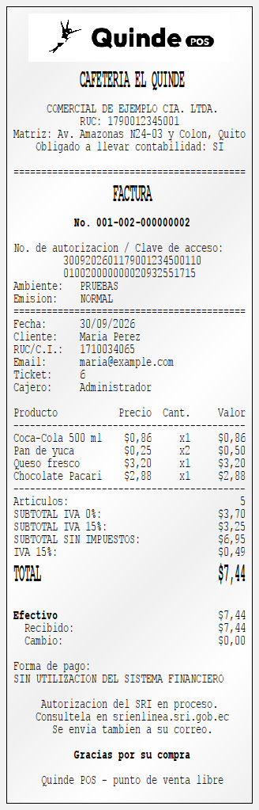
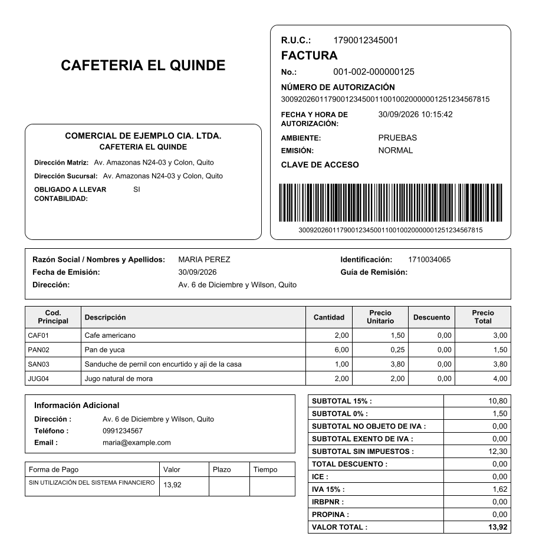
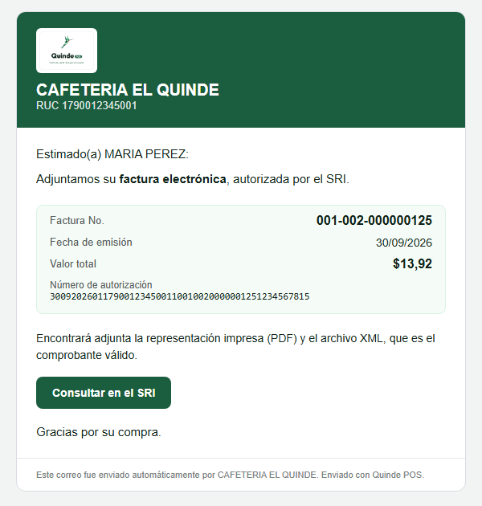
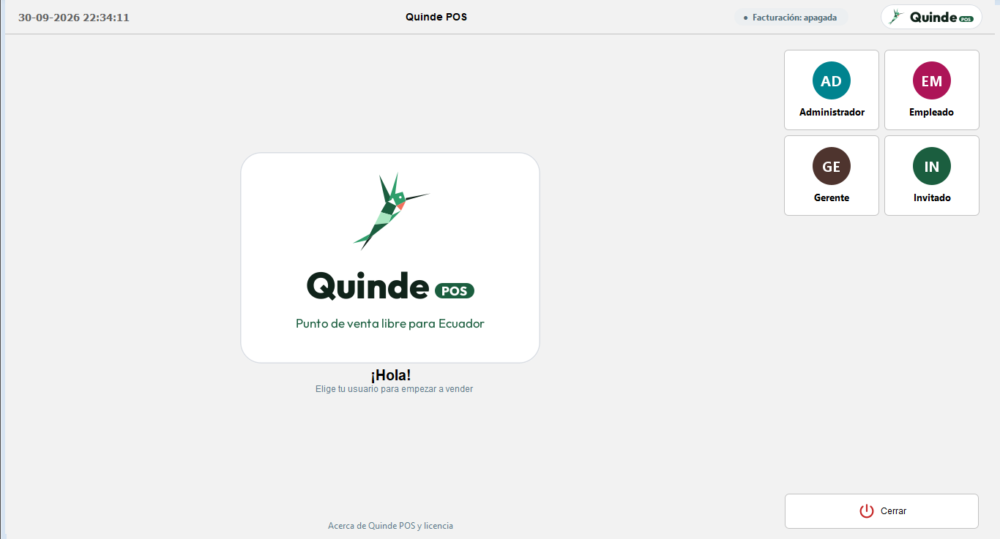
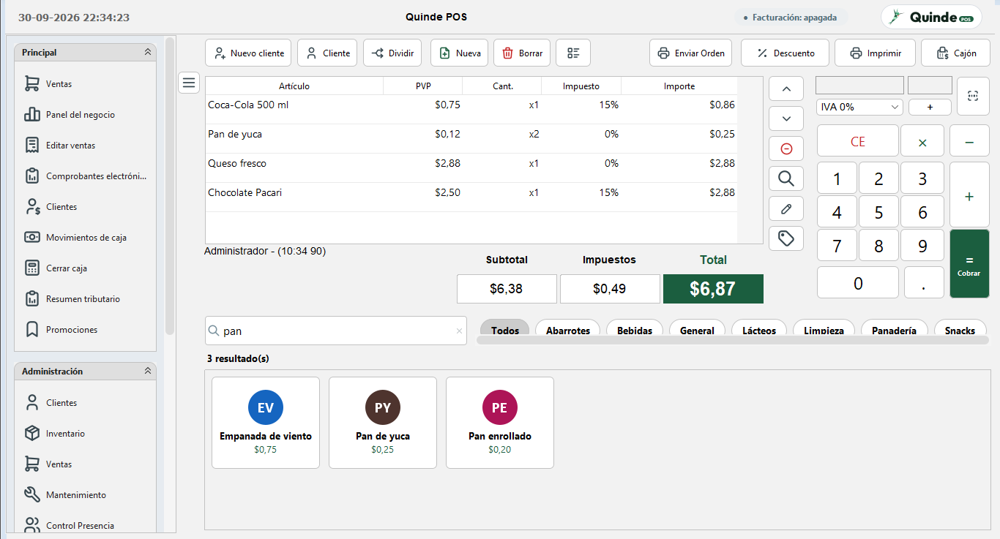
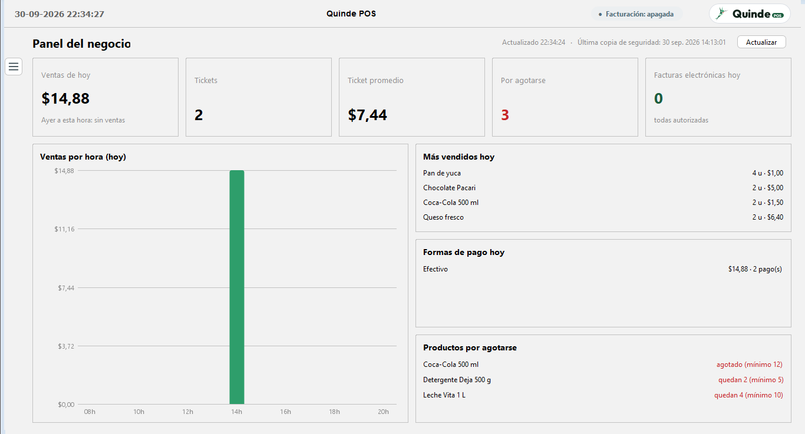
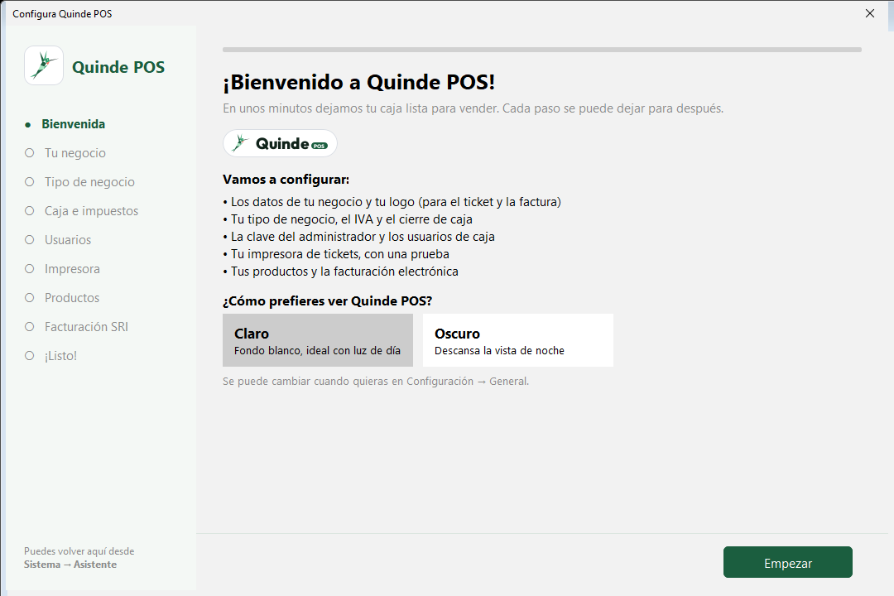

Facturación electrónica del SRI incluida · Hecho en Ecuador
Sistema de facturación gratuito para tu negocio en Ecuador
Quinde POS es un punto de venta con factura electrónica del SRI: vendes rápido, cuadras tu caja y facturas sin mensualidades ni costo por factura. Gratis en tu computadora con Windows, y también disponible para Android.
Versión 1.0.1 · Android 7 o superior · ¿Celular antiguo de 32 bits? Descarga esta versión. Al instalar, si Android lo pide, permite instalar apps de esta fuente.
Funciones
Todo lo que tu caja necesita
Desde la primera venta del día hasta el cierre de caja y la declaración del IVA.
Venta rápida y táctil
Busca por nombre o código de barras, toca las tarjetas de producto y cobra con F12. Categorías, fotos y cantidades en un toque.
Cobro en dólares
Billetes y monedas rápidos, botón Exacto, cambio en grande, pago dividido, tarjeta, transferencia y DeUna.
Facturación electrónica
Factura y nota de crédito firmadas y autorizadas por el SRI, con el PDF enviado por correo al cliente.
Panel del negocio
Ventas de hoy contra ayer, ticket promedio, ventas por hora, lo más vendido y productos por agotarse.
Promociones automáticas
2x1, 3x2, descuentos por producto o categoría y happy hour, aplicados solos al vender.
Caja segura
Cierre de caja con arqueo a ciegas, clave de supervisor para anular o descontar y registro de cada autorización.
Inventario y clientes
Stock por almacén con alertas, historial de cada cliente, cuentas por cobrar y abonos.
Impresoras y periféricos
Tickets térmicos, comanda de cocina, cajón de dinero, lector de códigos y visor de cliente.
Varios usuarios
Administrador, gerente, cajero e invitado, cada uno con sus permisos. Copia de seguridad automática diaria.
Facturación electrónica incluida
Cobras y la factura ya está en camino al SRI
No necesitas otro programa ni pagar por comprobante: Quinde POS firma, envía y consulta la autorización por ti.
El ticket es la facturaSale impreso con el número, la clave de acceso y los datos del cliente.
PDF con el formato del SRICon tu logo, enviado por correo junto al XML.
Errores explicados en palabras simplesY reintentos automáticos si no hay internet.
Notas de crédito totales o parcialesDevuelve solo los productos que hagan falta (el SRI no las admite en facturas a consumidor final).
Resumen tributario mensualVentas por tarifa de IVA, listo para el formulario 104.

Ticket impreso

Factura en PDF (RIDE)

Correo que recibe tu cliente
Capturas
Moderno, claro y fácil de aprender
Íconos nítidos en cualquier pantalla y todo en español.

Inicio de sesiónCada cajero toca su nombre para empezar.

Menú y búsquedaEncuentra cualquier producto en segundos.Pantalla de ventaEl total siempre a la vista y cobro con un toque.

Panel del negocioCómo va tu día, de un vistazo.
Las capturas usan un negocio y clientes de ejemplo.
Para quién es
Hecho para negocios como el tuyo
Tiendas de barrio, cafeterías y restaurantes que quieren vender ordenado y facturar sin complicaciones.
Tiendas y minimarkets
Cafeterías y panaderías
Restaurantes
Heladerías
Farmacias
Ropa y calzado
Ferreterías
Papelerías
Cómo empezar
Vendiendo en minutos
Un solo instalador y un asistente que te guía paso a paso.
Descarga el instalador
QuindePOS-Setup.exe para Windows 10 y 11. Trae Java y la base de datos: no instalas nada más.
Instálalo
Deja la base de datos incluida (recomendado) o conéctalo a tu servidor MySQL/MariaDB.
Sigue el asistente
Tu negocio y logo, tipo de negocio, IVA, usuarios, impresora con ticket de prueba y productos (también desde Excel).
Activa la facturación
Con tu firma electrónica (.p12), en el mismo asistente o siguiendo la guía paso a paso.
El instalador aún no tiene firma digital: si Windows muestra «Windows protegió su PC», toca Más información → Ejecutar de todas formas.

Asistente de configuraciónSe abre solo la primera vez. Cada paso se puede dejar para después y retomarlo desde Sistema → Asistente.
Guías gratuitas
Aprende a facturar electrónicamente
Explicadas en palabras simples y basadas en fuentes oficiales del SRI.
Sistema de facturación gratis para Ecuador: lo que debes saber
¿Quinde POS es un sistema de facturación gratuito?
Sí. La versión para Windows es software libre (GPL v3): la descargas, la instalas y facturas sin pagar licencias, mensualidades ni costo por comprobante.
¿Sirve para la facturación electrónica del SRI en Ecuador?
Sí. Genera el XML con los esquemas oficiales del SRI, lo firma con tu firma electrónica, lo envía y consulta la autorización. Imprime el ticket con la clave de acceso y manda el PDF (RIDE) y el XML al correo del cliente.
¿Qué necesito para emitir facturas electrónicas?
Tu RUC habilitado para facturación electrónica en el SRI y una firma electrónica en archivo .p12, que se obtiene con una entidad certificadora autorizada. Puedes practicar primero en el ambiente de pruebas del SRI.
¿Qué pasa si se cae el internet?
La venta no se pierde: queda registrada y Quinde POS reintenta enviar la factura al SRI automáticamente apenas vuelve la conexión. Desde 2026 el SRI exige transmitir cada factura en el momento de emitirla, así que conviene tener internet estable en la caja.
¿Hay versión para celular?
Sí, hay una app para Android 7 o superior. Es gratis en el ambiente de pruebas del SRI; para emitir facturas reales desde el celular se activa una licencia para el RUC de tu negocio.
¿Para qué negocios sirve?
Para tiendas, minimarkets, ferreterías, restaurantes, panaderías, farmacias y cualquier negocio del Ecuador que venda en mostrador y necesite caja, inventario y facturación.
¿Te ayudo a empezar?
Te muestro cómo funciona con los productos de tu negocio y te ayudo a instalarlo y a activar la factura electrónica. Escríbeme sin compromiso.
La versión para Windows es software libre con licencia GPL v3: puedes usarla, estudiarla, modificarla y compartirla sin pagar nada. Las ideas, reportes de errores y aportes de código son bienvenidos.